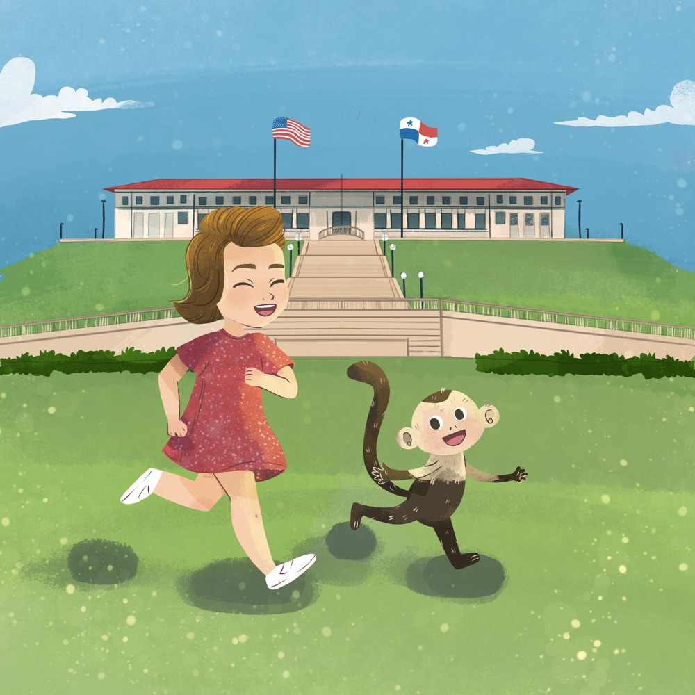

The Story
A young girl, a wild monkey, and the
adventure of a lifetime

Sometimes the best friendships start with a bite.
In the lush Panama Canal Zone of the 1960s, young Nancy's father surprises the family with an unusual new pet — a mischievous capuchin monkey named Linus. Nancy's mother and her perfect French twist hairdo would never be the same.
After a rocky first meeting involving a surprise bite (and Nancy biting him right back), Linus decides cage life isn't for him. He escapes into the jungle — but keeps coming back every single morning, tapping on the kitchen window for his toast and jelly.
From crashing the Governor's fancy tea party to becoming the most famous troublemaker in Balboa Heights, Linus proves that the best friends really do come in unexpected packages.